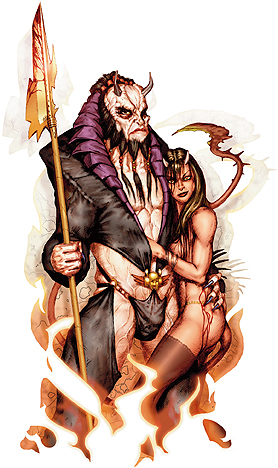

第四狱领主・贝利亚和菲尔娜
|  |
中型异界生物（守序，邪恶）
生命骰数：３６ｄ８+２８８（４５０ ｈｐ）
先攻权调整：+１１
速度：３０尺；飞行６０尺（完美）
防护等级：４０（+７敏捷，+６洞察，+１７天生防护等级），接触２３，措手不及３３
攻击：+５０/+４５/+４０/+３５（贝利亚，近战，+４ 三叉矛）（*注一）；+４６/+４１/+３６/+３１（菲尔娜，近战接触，火焰刀）
伤害：２ｄ４+１３穿刺，附带１秽恶伤害，重击×３（贝利亚，近战，+４ 三叉矛）；２ｄ８+２０火焰，重击１５-２０（菲尔娜，近战接触，火焰刀）
面宽/触及：５×５尺/５尺 （使用三叉矛时１０尺）
特殊攻击：恐惧氛围，类法术能力
特性：巴兹魔特性，伤害减免１５/+６，异界生物特性，再生７，法术抗力３６，召唤巴兹魔
豁免：强韧+２８，反射+２９，意志+２９
属性：力量２９，敏捷２５，体质 ２７，智力 ２８，感知 ２８，魅力 ３９
技能：估价+２７，平衡+１３，唬骗+５０，专注+４４，交涉+５８，易容+５０，脱逃术+１６，收集信息+５０，躲藏+２５，暗语沟通+５０，威吓+ ３６，跳跃+１３，知识（神秘）+２７，知识（贵族与皇室）+４５，知识（宗教）+２７，知识（位面）+２７，聆听+４５，潜行+２５，占卜+２７，探知 +４５，搜索+４５，观言察色+４５，法术辨识 +４５，侦察+４５，翻滚+２９
特技（贝利亚）：战斗反射，黑暗圣言，闪避，寓守于攻，精通卸除武器，精通先攻，快速反射，类法术能力瞬发，秽恶武术（三叉矛），武器专攻（三叉矛）
特技（菲尔娜）：黑暗圣言，闪避，寓守于攻，精通致命攻击（弯刀），精通先攻，快速反射，仇恨凡人，类法术能力瞬发，秽恶类法术能力，武器专攻（弯刀）
气候/地形：任意
组织：独行
挑战等级：２４
宝物：四倍标准
阵营：守序邪恶
进化：无
表面上，菲尔娜女士统治着地狱第四层弗莱格索斯。然而大部分的魔鬼都知道，她的父亲、前任领主贝利亚一直在幕后操纵着一切。菲尔娜生性放荡，对男人毫不挑剔，毫无戒心；她的父亲有过之而无不及，经常在俘虏、奴隶甚至其它魔鬼身上发泄自己的欲望。有流言说贝利亚和菲尔娜之间有乱伦关系。
菲尔娜居住在一座由粗糙岩石、深邃洞穴和熔岩池构成的一直在燃烧的宫殿里。宫殿中心是由珠宝装饰的豪华的大理石大厅，这是贝利亚的住所，除了菲尔娜和她最亲密的同伴外，任何人都不准进入。
菲尔娜和贝利亚看起来都是高大、黝黑的人类，英俊而性感，额头前面长有小角，有着火红的双眼。他们穿着帝王般华丽的服饰，贝利亚总是随身携带着他的三叉矛，菲尔娜则从不带任何武器，战斗时通常依赖她的火焰刀。
菲尔娜和贝利亚的徽记是一把横放的三叉矛上的一双闪烁的红色眼睛，外面环绕着一条末端有倒钩的红色尾巴。
战斗：
除非注明，以下能力和数据为贝利亚和菲尔娜共有。菲尔娜进入战斗时会启动“火焰护盾”和“反善良法阵”。贝利亚更喜欢用他的三叉矛作战，他进入战斗时会启动“识破隐形”、“反善良法阵”和“邪恶灵光”。
恐惧氛围（Ｓｘ）：贝利亚和菲尔娜可以以一个自由动作制造出２０尺的恐惧氛围，效果与“恐惧术”相同（施法者等级１５，意志豁免ＤＣ ４２）。豁免成功的角色在２４小时内不会被贝利亚和菲尔娜的恐惧氛围影响。所有巴兹魔对这种氛围免疫。
类法术能力（贝利亚）：随意施展“渎神之语”，“媚惑怪物”， “深幽黑暗术”，“亵渎术”，“侦测善良”，“侦测魔法”，“指使术”，“高等解除魔法”，“高等复原术”，“地狱火风暴”（ＨｅｌｌｆｉｒｅＳｔｏｒｍ），“生物定位术”，“物品定位术”，“反善良法阵”，“高等幻影”，“燃火术”，“死者复活”，“识破隐形”，“暗示”，“无错传送术”， “邪恶灵光”，“邪居”，“火墙术”；一天一次“支配怪物”，“痛苦徽记”，“许愿术”。施法者等级视为２０，豁免ＤＣ ２４+法术等级。
类法术能力（菲尔娜）：随意施展“亵渎术”，“侦测善良”，“侦测魔法”，“解除魔法”，“火球术”，“火焰护盾”，“火焰刀”（双倍伤害），“地狱火风暴”（ＨｅｌｌｆｉｒｅＳｔｏｒｍ），“反善良法阵”，“燃火术”，“暗示”，“无错传送术”，“火墙术”；一天一次“火焰风暴”，“流星爆”，“许愿术”。施法者等级视为２０，豁免ＤＣ ２４+法术等级。
巴兹魔特性：贝利亚和菲尔娜可以用心灵感应于１００尺内任何有语言的生物交谈。他们可以在任何黑暗中视物，包括由“深幽黑暗术”制造的黑暗。贝利亚和菲尔娜对火焰伤害免疫，对酸液和寒冷有２０的伤害减免。
再生（Ｅｘ）：+４附魔等级或以上的神圣武器可以对贝利亚和菲尔娜造成正常伤害。
召唤巴兹魔（Ｓｐ）：贝利亚和菲尔娜都可以每日三次自动召唤５名巴霸魔或哈玛魔。此外，贝利亚可以每天一次召唤１名深狱炼魔（菲尔娜无此能力）。
个人财产：贝利亚的三叉矛是一件次级神器，它的每一击都会令目标感受到巨大痛苦。目标被吸收两点敏捷，同时攻击检定、技能检定和属性检定-４不利（坚韧豁免ＤＣ ２４，通过无效）。后续效果只能被“医疗术”或“破除节界”消除。
贝利亚和菲尔娜的目标：
菲尔娜对在地狱的复杂政治环境中争权夺利并没什么兴趣。她更喜欢利用自己目前的身份和财富享受舒适而奢靡的生活。因此她并不怨恨自己充当父亲傀儡的事实，反而很情愿的替他发号施令。
贝利亚是格殷永和莫洛克的死敌，这两位领主已经于“大清算”中被阿斯摩蒂而斯所废。贝利亚同样痛恨马曼。不过，他目前更关注地狱第五层和第六层。他认为如果自己能够征服莱维思图斯，那么战胜鬼婆女伯爵就易如反掌。
贝利亚曾经是巴尔泽布的长期的盟友。甚至在“大清算”后，这一关系依然被保留下来。当然，这是个秘密。不过一旦巴尔泽布需要，贝利亚一定会站在他这一边。如果这种情况出现，莫菲斯托费利斯就会利用菲尔娜来对付她父亲。要是不听话，她就会被当作人质。
贝利亚和菲尔娜的信徒：
菲尔娜没有信徒。有少数凡人崇拜贝利亚。他们视贝利亚为支配、秘密、诡术和诱惑之神。他的徽记为一把双尖三叉矛和一张黑色长角的英俊男性的脸。
贝利亚的牧师领域为诡术、邪恶以及知识，他们喜好的武器是三叉矛。贝利亚的牧师中男性居多，他们通常穿着红黑相间的服装，留着稀疏的胡子。
贝利亚的神殿一般设在别致的高塔或大理石大厅内，这些地方始终保持整洁雅致。贝利亚沾满血污的祭坛总是环绕着红色和黑色的蜡烛。
信徒：
丁巴是一个受虐狂，他喜欢绑架女性侏儒，强迫她们性虐待自己，然后杀死并肢解。他一向独来独往，离群索居。
丁巴
男性侏儒，牧师１６级
挑战等级：１６
小型类人生物
生命骰数：１６ｄ８+３２（１１６）
先攻权加值：+１
速度：１５尺
防护等级：２１，接触１２，措手不及２３
攻击：+１７/+１２/+７ 近战，（１ｄ６+３/１９-２０，精制轻型钉头槌），或者+１５远程（１ｄ８/１９-２０，精制轻型十字弓）
特殊攻击（ＳＡ）：呵斥死灵×７每日，类法术能力
特性（ＳＱ）：疾病，侏儒特性
阵营：守序邪恶
豁免：强韧+１２，反射+６，意志+１６
属性：力量 １７，敏捷 １２，体质 １４，智力 １２，感知 ２２，魅力 １８
技能：专注+２１，医疗+２１，躲藏+５，知识（神秘）+６，知识（宗教）+６，聆听+８，专业（抄录）+９，侦查+９
特技：制造魔法武器及防具，制造奇物，法术强效，邪恶烙印（ＥｖｉｌＢｒａｎｄ），锻造戒指，法术瞬发
疾病：丁巴目前正患有腐魂症（ｓｏｕｌ ｒｏｔ）（**注二）。
侏儒特性：丁巴拥有低光视力，他在光线昏暗条件下的视野是人类的两倍。丁巴在对抗幻术时有２点豁免判定种族奖励值，在对抗地精类生物时有+１攻击判定种族奖励值，在对抗巨人时ＡＣ有+４的闪避奖励值。
类法术能力：每日一次舞光术、幻音术、魔法伎俩。施法者等级１，豁免ＤＣ １５。
通常法术（６/８/８/７/６/６/５/４/３；豁免ＤＣ １６+法术等级）：０级，治疗微伤×２，侦测魔法，修复术，灭光术（ＮｏＬｉｇｈｔ），恩赐；１级，绝望术，变颜术，神恩，丧志术，忍受元素伤害，虔诚护盾，悲哀术（Ｓｏｒｒｏｗ），延缓疾病（ＳｕｓｐｅｎｄＤｉｓｅａｓｅ）；２级，公牛之力，治疗中度伤害，坚韧术，人类定身术，隐形，粉碎音波，沉默术，哀伤之浪（Ｗａｖｅ ｏｆＧｒｉｅｆ）；３级，降咒术，锐耳术/鹰眼术，解除魔法，物品定位术，受虐成性（Ｍａｓｏｃｈｉｓｍ），防护元素伤害，朽萎术（Ｓｈｒｉｖｅｌｉｎｇ）；４级，困惑术，治疗致命伤害，驱逐术，行动自如，高等魔化武器，四级怪物召唤术；５级，破除节界，炎击术，摄取心脏（Ｈｅａｒｔｃｌｕｔｃｈ），杀生术，法术抗力，真知术；６级，剑刃障壁，重伤术×２，医疗术，误导术；７级，操控天气，强效炎击术，囚困灵魂（ＩｍｐｒｉｓｏｎＳｏｕｌ），障幕；８级，反魔法力场，瞬发炎击术，变形万物。
*领域法术
领域：知识（所有知识技能均为本职技能；在施展预言系法术时，施法者等级获得+１的奖励），诡术（唬骗、易容、躲藏为本职技能）
个人财产：+３胸甲，+２大钢盾，Ｘ光戒指，心灵感应头盔，黑暗头骨，法力再生珍珠（四级），精制轻型钉头槌，精制轻型十字弓，矢×１０
贝利亚和菲尔娜的手下：
加兹拉是菲尔娜的忠实手下和伴侣。当菲尔娜在遍地岩浆的巢穴中寻欢作乐的时候，加兹拉负责处理各项日常事务。莱维思图斯曾屡次试图拉拢加兹拉加入自己的阵营，也许他不久后就会经受不起这种诱惑，不过目前加兹拉完全忠诚于菲尔娜。如果加兹拉能再次得到菲尔娜的青睐，情况可能会有所不同。加兹拉仇视且嫉妒贝利亚，不过他始终隐藏着这一点。
加兹拉
男性进化深狱炼魔
挑战等级 １８
大型异界生物（守序，邪恶）
生命骰数２６ｄ８+１８２（２９９）
先攻权加值 +４
速度 ４０尺，飞行６０尺（灵活性一般）
防护等级 ３５，接触８，措手不及３５
攻击：+３５近战（２ｄ４+１１，双爪），+３０近战（２ｄ６+５，双翅），+３０近战（２ｄ６+５，剧毒，疾病，撕咬），+３０近战（２ｄ６+５，尾扫）
面宽/触及：５×１０尺/１５尺
特殊攻击：紧勒２ｄ６+１６，疾病，恐惧氛围，精通擒抱，剧毒，类法术能力
特性：巴兹魔特性，伤害减免２５/+２，异界生物特性，法术抗力 ３０，再生 ５，召唤巴兹魔
阵营：守序邪恶
豁免：强韧+２２，反射+１５，意志+２０
属性：力量３３，敏捷１１，体质２５，智力２０，感知２０，魅力１６
技能：唬骗+３２，攀爬+３６，专注+３４，交涉+１２，易容+３１，躲藏+１２，威吓+７，跳跃+３６，知识（神秘）+３４，聆听+３４，潜行+２９，搜索+３４，法术辨别+３４，观察+３４
特技：顺劈砍，邪恶类法术能力，大顺劈，精通先攻，猛力攻击，类法术能力瞬发，秽恶自然武器（爪）
紧勒（Ｅｘ）：当擒抱成功时，加兹拉可以进行压制，造成２ｄ６+１６的钝击伤害。
疾病（Ｅｘ）：即使被加兹拉撕咬的生物成功地豁免了剧毒，他仍然需要进行坚韧豁免（ＤＣ ３０），失败将会感染魔鬼之寒。疾病的潜伏期为１ｄ４天，造成１ｄ６力量伤害。受害者必须连续三次成功坚韧鉴定才能够复原。
恐惧氛围（Ｓｕ）：加兹拉可以自由制造出２０尺的恐惧氛围。效果与“恐惧术”相同（施法者等级１５，意志豁免ＤＣ ２６）。豁免成功的角色在２４小时内不会被加兹拉的恐惧氛围影响。所有巴兹魔对这种氛围免疫。
精通擒抱（Ｅｘ）：当加兹拉用尾扫击中中型或更小的生物时，可以在造成伤害的同时尝试擒抱且不会导致借机攻击（擒抱+４５），而且也可以在同一轮进行压制。加兹拉也可以选择通常的擒抱，或是用尾卷起对手（擒抱上有-２０的不利，但加兹拉将不被视作正在进行擒抱）。在这两种情况下，成功的擒抱都附加着尾扫攻击的伤害。
剧毒（Ｅｘ）：加兹拉的撕咬攻击附带剧毒（坚韧ＤＣ ３０）。初始效果为１ｄ６点体质伤害，附加效果为直接死亡。
类法术能力：随意施展“操纵死尸”，“渎神之语”，“媚惑人类”， “唤起死灵”，“亵渎术”，“侦测善良”，“侦测魔法”，“解除魔法”，“火球术”，“人类定身术”，“高等隐身”，“反善良法阵”， “高等幻影”，“燃火术”，“变形自己”，“烟火术”，“暗示”，“无错传送术”（自身加５０磅物品），“邪恶灵光”，“邪居”，“火墙术”；一天一次 “流星爆”，“魔法徽记（任意）”。施法者等级视为１７，豁免ＤＣ １３+法术等级。
一年一次，加兹拉可以使用“许愿术”，施法者等级视为２０。
巴兹魔特性：加兹拉可以用心灵感应于１００尺内任何有语言的生物交谈。他可以在任何黑暗中视物，包括由“深幽黑暗术”制造的黑暗。加兹拉对火焰伤害免疫，对酸液和寒冷有２０的伤害减免。
异界生物特性：加兹拉不能被更复或是复活。
快速恢复（Ｅｘ）：+３附魔等级或以上的神圣武器可以对加兹拉造成正常伤害。
召唤巴兹魔（Ｓｐ）：加兹拉可以每日两次自动召唤２名劣魔，奥塞魔，巴霸魔或是１名厄瑞尼斯女妖，恐纳魔，奇鲁魔。
个人财产：Ｂｒａｃｅｒｓ ｏｆ ａｒｍｏｒ +４， ｒｉｎｇ ｏｆ ｅｖａｓｉｏｎ。
*注一
武器名称 价格 伤害(Ｓ) 伤害(Ｍ) 重击 射程 重量 伤害类型
三叉矛(Ｒａｎｓｅｕｒ) １０ ｇｐ １ｄ６ ２ｄ４ ｘ３ ― １２磅 穿刺伤害
三叉矛(Ｒａｎｓｅｕｒ)：三叉矛属于长型武器，你可以使用它攻击１０尺远的敌人，但是你不能使用它攻击相邻的敌人。当使用三叉矛时，你在尝试解除敌人武装的行动中将获得+２的攻击检定奖励(包括了当你解除武装失败后避免被敌人解除武装的检定)。
**注二
腐魂症（ｓｏｕｌ ｒｏｔ）：当生物食用邪恶的异界生物后，可能会感染上这种可怕的疾病。腐魂症逐渐吞噬着角色的灵魂，直至她在极度痛苦中死亡。
名称 传播方式 ＤＣ 潜伏期 伤害
腐魂症 特殊 ２３ １ｄ ８天 １ｄ６感知，１ｄ６魅力